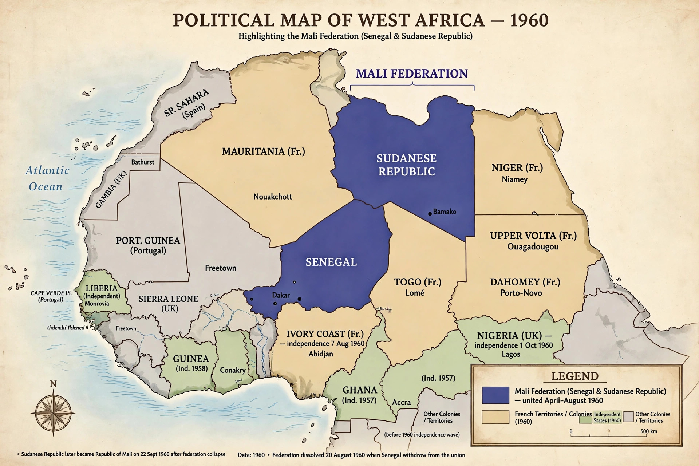

The Mali Federation (French: Fédération du Mali) was a short-lived federation in West Africa linking the French colonies of Senegal and the Sudanese Republic. It existed between April 1959 and August 1960, when it broke apart to form the independent states of Senegal and Mali. The federation was named in honour of the medieval Mali Empire.
| Mali Federation | |
|---|---|
 Map showing the Mali Federation between Senegal and Sudanese Republic in 1960 Extent of the federation, 1960 | |
| Capital | Dakar |
| Lifespan | 1959–1960 |
| Prime Minister | Modibo Keïta |
| Successors | Republic of Mali; Republic of Senegal |
| Constituent states | Senegal, Sudanese Republic (Mali) |
Federation was initially envisaged as a broader union of francophone West African states — Senegal, the Sudanese Republic (modern Mali), Upper Volta (Burkina Faso), and Dahomey (Benin). Dahomey and Upper Volta withdrew under French pressure, leaving only Senegal and Sudan. A federal constitution was adopted in January 1959, and the Mali Federation was proclaimed in April 1959. Modibo Keïta of the Sudanese Republic became federal prime minister, while Léopold Sédar Senghor of Senegal served as president of the federal assembly. The federation remained within the French Community until it negotiated independence from France on 20 June 1960.
Independence immediately exposed tensions. Keïta favoured a unitary federation and a socialist programme; Senghor and the Senegalese leadership preferred a looser confederal arrangement and closer ties to France. Fearing a coup by Keïta, Senegalese leaders seized control in Dakar on the night of 19–20 August 1960 and withdrew from the federation, expelling Sudanese officials by train across the frontier — the so-called "train of shame" incident. The Sudanese Republic proclaimed itself the independent Republic of Mali on 22 September 1960, retaining the federation's name for the new state.
The collapse of the Mali Federation was one of several failures of post-independence supranational projects in Africa, and it froze relations between Mali and Senegal for some years, though both countries later cooperated in regional bodies such as ECOWAS. The episode also shaped both leaders: Senghor ruled Senegal until 1980, while Keïta's Mali pursued a more radical socialist course until his overthrow in 1968.
Categories: Former federations · History of Mali · History of Senegal